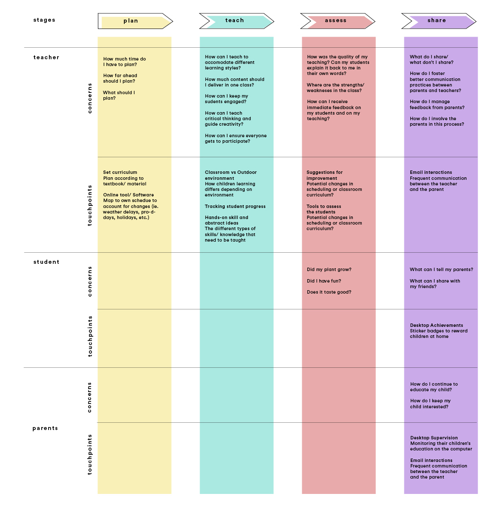
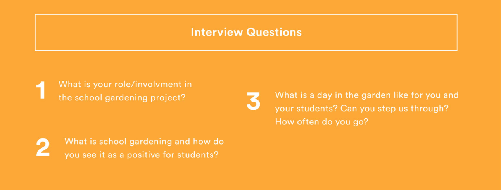
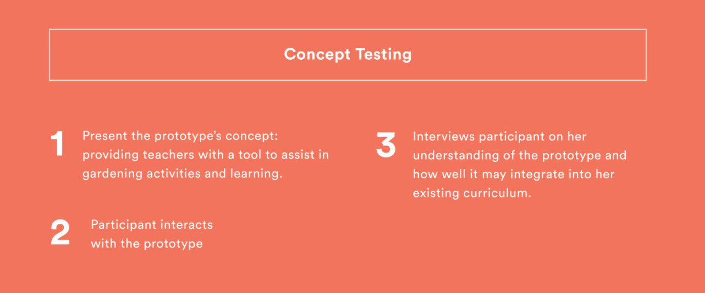

Tablet Application Design
Cultivate
Cultivate is an urban farming tablet app designed to aid elementary teachers in educating and fostering green sustainability in youths.
My Roles
Experience Design
User Research
Tools
Adobe Creative Suite
Final Cut Pro
Flinto
Sketch
Duration
This project was created over seven weeks.
Brief
For a interface design course, the objective was to develop a high-level fully featured prototype of an interactive system. The main requirement is that there is a significant interface design component required of the interactive system.
Vision
Educational App
Garden Planning
an educational application assisting teachers and students in learning and tracking gardening progress, developing food preparation skills and managing school garden sales.
Opportunity
Greenest City Initiative
Agricultural Literacy
Student Engagement
The Greenest City Initiative aims to make Vancouver the most sustainable city by 2020. In order to do this, the city must increase the number of city food assets.
Therefore, to tackle this, we chose the domain of urban farming/agriculture which can be defined as the practice of cultivating, processing and subsequently distributing food in, or around a village, town, or city.
We began to conduct research on the impact of student learning and skill development through a digital medium in hopes of fostering sustainable values in children at a young age.
Much of our research showed that teachers' limitations in agriculture literacy can prevent student engagement.
Insights
School Gardening
"Maintaining gardens over time and moving the worload away from teachers"
"Many elementary teachers were not agriculture-literate and lacked knowledge of basic plant science or plant-growing skills, training needed"
Dorothy Blair (2009). The Child in the Garden: An Evaluative Review of the Benefits of School Gardening, The Journal of Environmental Education 40:2, 15-38, DOI: 10.2300/ JOEE.40.2.15038
Challenges
- Aiding teachers in skill development in young children
- Integrating digital mediums into the curriculum
- Developing sustainable values in children
Journey Framework
User Testing
We conducted two types of user testing: interview questions and concept questions.
 We ran the test once in an empty classroom after the school day had ended out of consideration for the participant's schedule as well as the school's visor policy.
The following design issues were raised during our user testing:
1. The Feature of adding students into 'My Classroom' process was impractical and not necessary with a class of thirty.
The user stated that in an elementary school garden, the feature will most likely be left aside since it is a bit tedious.
2. Choice of wording and copywrite led to a lot of confusion.
When onboarding, the categories 'My Classroom' and 'My Garden' were misleading. Another issue we had was the label of the search bar as 'Plants' and the use of our 'filters' when searching for these plants.
3.Interactive Componants weren't intuitive enough.
Most of the time, the participant had to read the smaller print to know to tap on the animations or did not know to tap on them at alwl resulting in the participant skipping over sections.
Identified Teacher participant pain points: struggled with pre-planning moments of garden creation including making the garden layout and crop selection
User Experience


Moving Forward
Garden Creation
Language Support
Moving forward in the design iterations, we removed the teaching portion and the student management. Cultivate featured a more detailed garden creation user interface with a more intuitive crop selection tool that will suggest suitable crops to grow alongside each other in a trough. In order to implement Cultivate into a curriculum, a French version will be important for Canadian schools.
The user testing gave us a lot of insights into what teachers required when school gardening. Working within the scope of the project, we were only able to limit ourselves to a few features. Overall, with our app, we wanted to promote a sustainable future starting with our youths.